Day-1 locations, round 1
New backgrounds for the monorail, the gate, the copy room and Sales, drawn with RDBT Anima at the game's shape. The basement office is in the cast round (decide2). Each set starts with the current game image in grey. Nothing is in the game yet. Click an image to enlarge; arrow keys step through, Esc closes.
Monorail (inside the carriage)
The game now uses the outside view, which runs on ordinary rails on a bridge. These are inside the carriage, with the bay, the beam and the island through the windows.
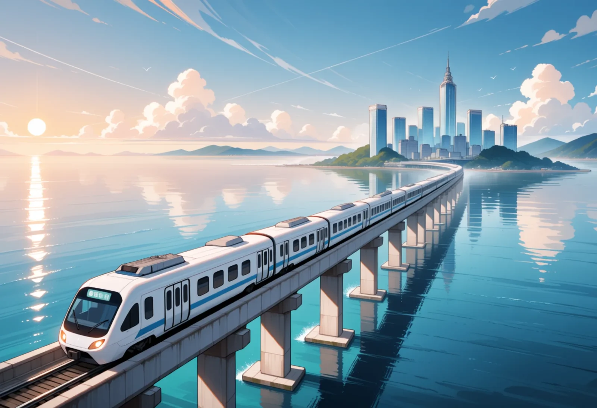
Current game image (for comparison)
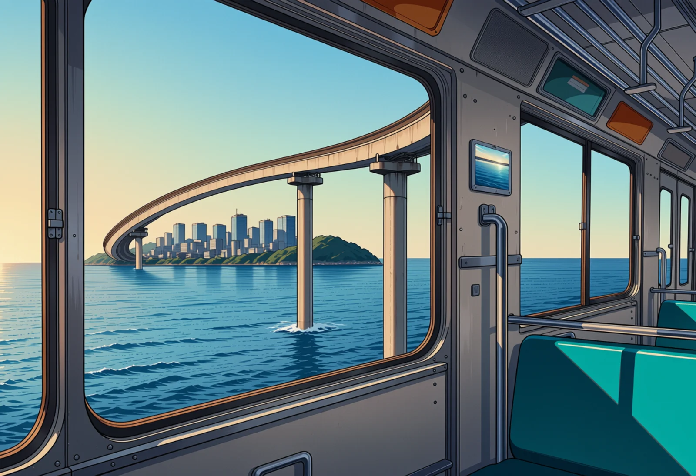
monorail-window-1301
Intent: The first look at his new home: the beam curves ahead across the bay to the island.
Looking out and slightly ahead: the beam curves across the bay to the island. The clearest 'arriving' shot; there's no door in view.
Prompt
masterpiece, best quality, score_9, score_8, score_7, year 2025, newest, highres, absurdres, very aesthetic, anime screenshot, anime coloring, 2d, cel shading, clean lineart, safe, no humans, scenery, background art for a visual novel, inside a Japanese monorail carriage, camera beside a large window looking out at an angle, the window frame and a seat back in the foreground, a grab pole, outside the windows: Tokyo Bay seen from high up, calm blue sea far below, (an elevated concrete monorail guideway beam on tall concrete pillars rising out of the sea:1.4), in the distance a large man-made island covered with glass office towers of one company city, (the guideway beam curving ahead in a gentle arc toward the island, seen through the window:1.3), morning sun on the water, bright morning light, dominant pale sky blue and sea blue, broad white and light grey interior, sparse teal seat and orange accents
Negative
worst quality, low quality, early, old, score_1, score_2, score_3, artist name, blurry, jpeg artifacts, bad anatomy, bad hands, missing fingers, extra fingers, long fingernails, claws, extra limbs, merged limbs, text, watermark, signature, 3d, realistic, photorealistic, render, chubby, nude, nsfw, child, loli, people, person, 1girl, 1boy, crowd, character, people, silhouette, passenger, readable text, letters, logo, brand name, signage text, duplicate objects, floating objects, impossible architecture, distorted perspective, warped lines, train on water, floating train, rails on water, bridge without pillars, bed, sofa, living room
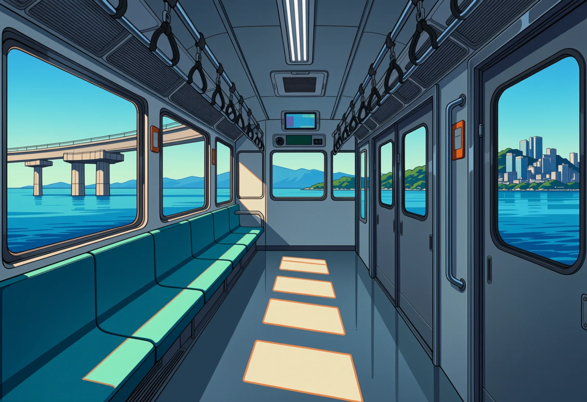
monorail-across-1403
Intent: Same arrival moment, framed down the empty car with the island in the right-hand windows by the exit doors.
Down the empty car. The island shows through the right-hand door, which fits the 'exit on the right' choice. A second line's beam runs on the left. (The prompt asked for a view straight across the aisle; the model drew it down the car anyway.)
Prompt
masterpiece, best quality, score_9, score_8, score_7, year 2025, newest, highres, absurdres, very aesthetic, anime screenshot, anime coloring, 2d, cel shading, clean lineart, safe, no humans, scenery, background art for a visual novel, inside a Japanese monorail commuter carriage, (flat frontal view straight across the aisle at the opposite wall:1.5), camera seated on one bench looking at the other side, one long teal cushioned bench seat along the opposite wall, above it a row of three wide windows, hand straps hanging from a ceiling rail in a straight row across the top, a closed sliding door at the right edge, clean grey floor, symmetrical composition, outside the windows: Tokyo Bay seen from high up, calm blue sea far below, (an elevated concrete monorail guideway beam on tall concrete pillars rising out of the sea:1.4), in the distance a large man-made island covered with glass office towers of one company city, the island in the right window, bright morning light, dominant pale sky blue and sea blue, broad white and light grey interior, sparse teal seat and orange accents
Negative
worst quality, low quality, early, old, score_1, score_2, score_3, artist name, blurry, jpeg artifacts, bad anatomy, bad hands, missing fingers, extra fingers, long fingernails, claws, extra limbs, merged limbs, text, watermark, signature, 3d, realistic, photorealistic, render, chubby, nude, nsfw, child, loli, people, person, 1girl, 1boy, crowd, character, people, silhouette, passenger, readable text, letters, logo, brand name, signage text, duplicate objects, floating objects, impossible architecture, distorted perspective, warped lines, train on water, floating train, rails on water, bridge without pillars, bed, sofa, living room, platform, rails, tracks, second train, open air
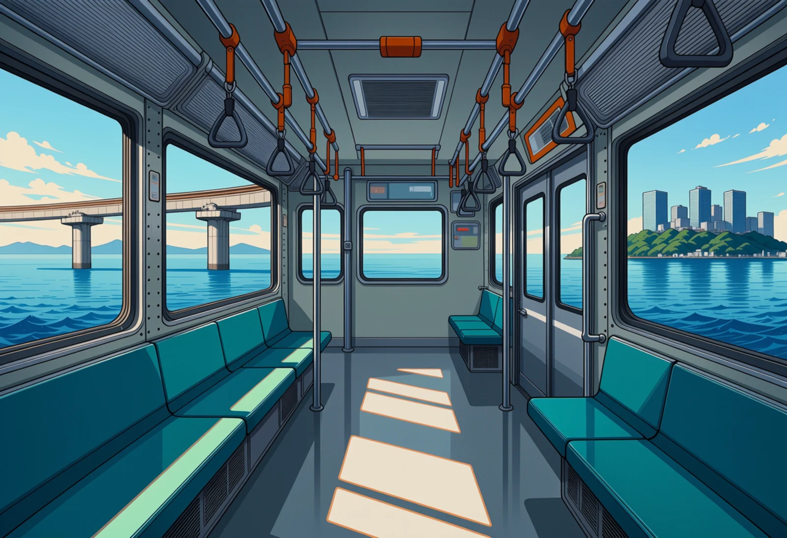
monorail-across-1401
Intent: Same arrival moment, framed down the empty car with the island in the right-hand windows by the exit doors.
Same framing as 1403, with orange straps and the island in the right-hand windows. A bit cleaner, and the island is smaller. (The prompt asked for a view straight across the aisle; the model drew it down the car anyway.)
Prompt
masterpiece, best quality, score_9, score_8, score_7, year 2025, newest, highres, absurdres, very aesthetic, anime screenshot, anime coloring, 2d, cel shading, clean lineart, safe, no humans, scenery, background art for a visual novel, inside a Japanese monorail commuter carriage, (flat frontal view straight across the aisle at the opposite wall:1.5), camera seated on one bench looking at the other side, one long teal cushioned bench seat along the opposite wall, above it a row of three wide windows, hand straps hanging from a ceiling rail in a straight row across the top, a closed sliding door at the right edge, clean grey floor, symmetrical composition, outside the windows: Tokyo Bay seen from high up, calm blue sea far below, (an elevated concrete monorail guideway beam on tall concrete pillars rising out of the sea:1.4), in the distance a large man-made island covered with glass office towers of one company city, the island in the right window, bright morning light, dominant pale sky blue and sea blue, broad white and light grey interior, sparse teal seat and orange accents
Negative
worst quality, low quality, early, old, score_1, score_2, score_3, artist name, blurry, jpeg artifacts, bad anatomy, bad hands, missing fingers, extra fingers, long fingernails, claws, extra limbs, merged limbs, text, watermark, signature, 3d, realistic, photorealistic, render, chubby, nude, nsfw, child, loli, people, person, 1girl, 1boy, crowd, character, people, silhouette, passenger, readable text, letters, logo, brand name, signage text, duplicate objects, floating objects, impossible architecture, distorted perspective, warped lines, train on water, floating train, rails on water, bridge without pillars, bed, sofa, living room, platform, rails, tracks, second train, open air
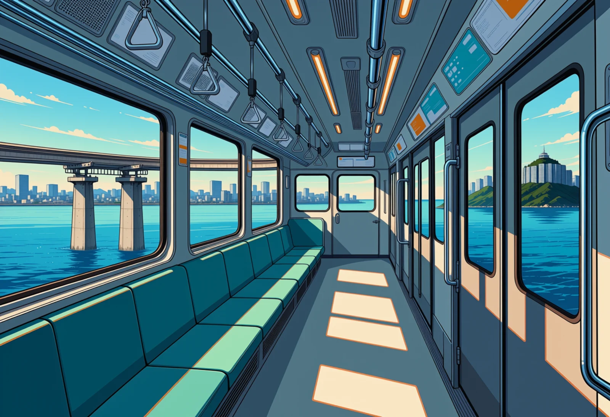
monorail-side-1103
Intent: He arrives on the island to live there: an empty mid-morning carriage, the island coming up on the exit side.
The earlier version of the down-the-car shot, darker grey and more worn. Island through the right-hand door.
Prompt
masterpiece, best quality, score_9, score_8, score_7, year 2025, newest, highres, absurdres, very aesthetic, anime screenshot, anime coloring, 2d, cel shading, clean lineart, safe, no humans, scenery, background art for a visual novel, inside a modern Japanese monorail commuter carriage, camera at seated eye level in the aisle facing the right-hand side of the car, a long cushioned bench seat running along the wall under a row of wide windows, stainless steel grab poles, hanging hand straps from a ceiling rail, blank advertising frames above the windows, a pair of sliding doors at the right edge, clean floor, outside the windows: Tokyo Bay seen from high up, calm blue sea far below, (an elevated concrete monorail guideway beam on tall concrete pillars rising out of the sea:1.4), in the distance a large man-made island covered with glass office towers of one company city, the island in the right part of the window view, bright morning light, dominant pale sky blue and sea blue, broad white and light grey interior, sparse teal seat and orange accents
Negative
worst quality, low quality, early, old, score_1, score_2, score_3, artist name, blurry, jpeg artifacts, bad anatomy, bad hands, missing fingers, extra fingers, long fingernails, claws, extra limbs, merged limbs, text, watermark, signature, 3d, realistic, photorealistic, render, chubby, nude, nsfw, child, loli, people, person, 1girl, 1boy, crowd, character, people, silhouette, passenger, readable text, letters, logo, brand name, signage text, duplicate objects, floating objects, impossible architecture, distorted perspective, warped lines, train on water, floating train, rails on water, bridge without pillars, bed, sofa, living room
Gate (security entrance)
The current one looks like a station ticket hall with no guard post. These have ID card gates and a place for Ishibashi to stand.
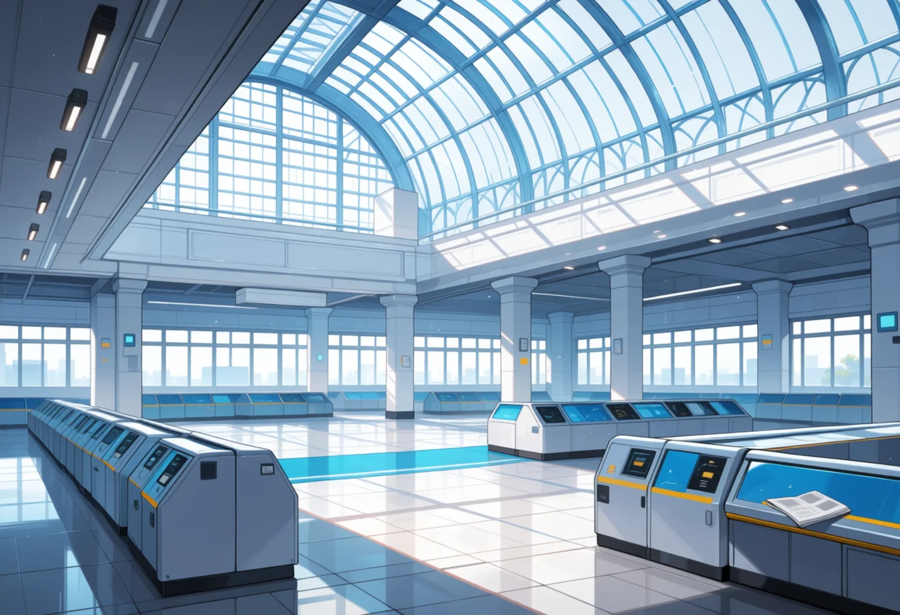
Current game image (for comparison)
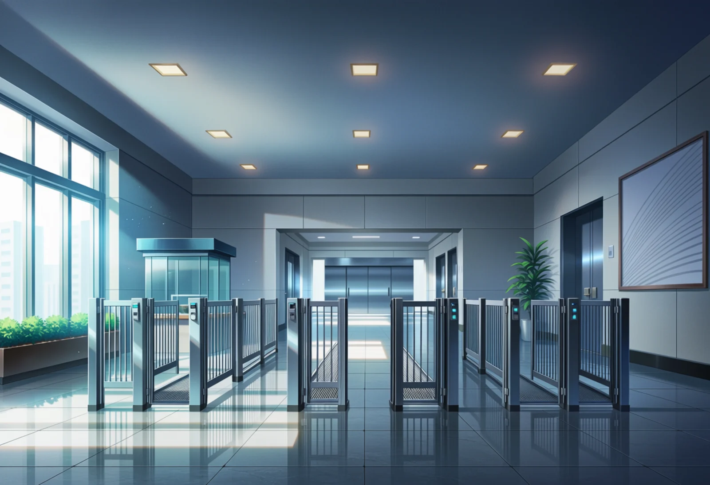
gate-hall-2302
Intent: Same beat, with the elevators he is heading for visible behind the gates.
Waist-high swing gates with card readers, a glass guard booth on the left for Ishibashi, and the lifts straight ahead.
Prompt
masterpiece, best quality, score_9, score_8, score_7, year 2025, newest, highres, absurdres, very aesthetic, anime screenshot, anime coloring, 2d, cel shading, clean lineart, safe, no humans, scenery, background art for a visual novel, indoors, the ground-floor security hall of a Japanese corporate headquarters, camera at eye level in front of the gates, (a row of six low waist-high security speed gates with short glass flaps and open walking lanes between them:1.4), a card reader on each gate, a small glass-walled security guard booth with a counter and a desk lamp at the left end of the gate row, (behind the gates a wide corridor leading to a bank of four steel elevator doors:1.3), stone-clad walls, polished stone floor, recessed ceiling lights, one wall with a large abstract relief without text, a low planter, cool morning light, dominant white stone and pale grey, broad glass blue, sparse navy and teal accents
Negative
worst quality, low quality, early, old, score_1, score_2, score_3, artist name, blurry, jpeg artifacts, bad anatomy, bad hands, missing fingers, extra fingers, long fingernails, claws, extra limbs, merged limbs, text, watermark, signature, 3d, realistic, photorealistic, render, chubby, nude, nsfw, child, loli, people, person, 1girl, 1boy, crowd, character, people, silhouette, passenger, readable text, letters, logo, brand name, signage text, duplicate objects, floating objects, impossible architecture, distorted perspective, warped lines, train station, ticket machines, railway platform, shop, bed, outdoors, sky, trees, sea, fence
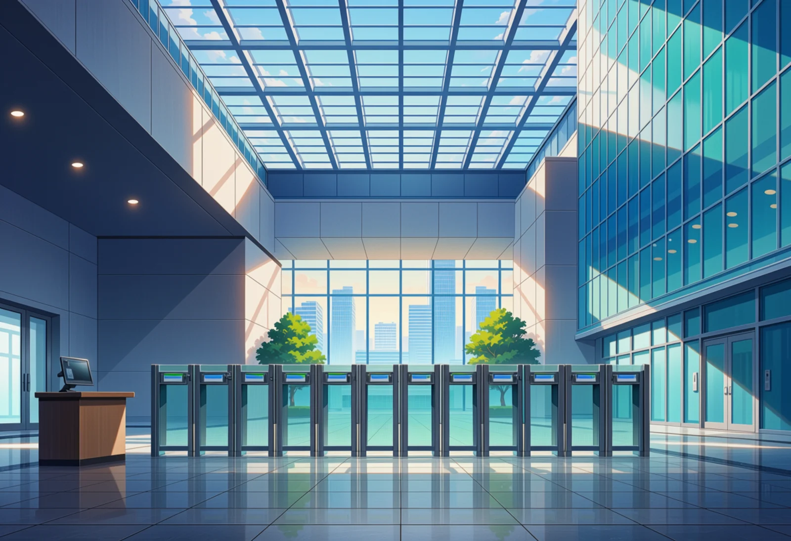
gate-lobby-2102
Intent: Ishibashi stops him at the gate: a row of ID card gates with a guard post beside them.
A glass-roofed atrium with a line of speed gates and a guard podium on the left. Brighter and grander, but no lifts in view.
Prompt
masterpiece, best quality, score_9, score_8, score_7, year 2025, newest, highres, absurdres, very aesthetic, anime screenshot, anime coloring, 2d, cel shading, clean lineart, safe, no humans, scenery, background art for a visual novel, the huge entrance lobby of a Japanese conglomerate headquarters tower, camera at eye level approaching a row of waist-high glass-flap security speed gates for ID cards, one card reader on top of each gate, a security guard podium desk with a small monitor beside the gates on the left, a high double-height atrium beyond the gates with a bank of elevator doors at the back wall, polished stone floor, tall glass facade on the right, a large abstract wall relief without text, a few potted trees, cool morning light, dominant white stone and pale grey, broad glass blue, sparse navy and teal accents
Negative
worst quality, low quality, early, old, score_1, score_2, score_3, artist name, blurry, jpeg artifacts, bad anatomy, bad hands, missing fingers, extra fingers, long fingernails, claws, extra limbs, merged limbs, text, watermark, signature, 3d, realistic, photorealistic, render, chubby, nude, nsfw, child, loli, people, person, 1girl, 1boy, crowd, character, people, silhouette, passenger, readable text, letters, logo, brand name, signage text, duplicate objects, floating objects, impossible architecture, distorted perspective, warped lines, train station, ticket machines, railway platform, shop, bed

gate-lobby-2103
Intent: Ishibashi stops him at the gate: a row of ID card gates with a guard post beside them.
Full-height glass security doors with one open lane, a round atrium behind, and a guard podium on the left. The most corporate and the least friendly.
Prompt
masterpiece, best quality, score_9, score_8, score_7, year 2025, newest, highres, absurdres, very aesthetic, anime screenshot, anime coloring, 2d, cel shading, clean lineart, safe, no humans, scenery, background art for a visual novel, the huge entrance lobby of a Japanese conglomerate headquarters tower, camera at eye level approaching a row of waist-high glass-flap security speed gates for ID cards, one card reader on top of each gate, a security guard podium desk with a small monitor beside the gates on the left, a high double-height atrium beyond the gates with a bank of elevator doors at the back wall, polished stone floor, tall glass facade on the right, a large abstract wall relief without text, a few potted trees, cool morning light, dominant white stone and pale grey, broad glass blue, sparse navy and teal accents
Negative
worst quality, low quality, early, old, score_1, score_2, score_3, artist name, blurry, jpeg artifacts, bad anatomy, bad hands, missing fingers, extra fingers, long fingernails, claws, extra limbs, merged limbs, text, watermark, signature, 3d, realistic, photorealistic, render, chubby, nude, nsfw, child, loli, people, person, 1girl, 1boy, crowd, character, people, silhouette, passenger, readable text, letters, logo, brand name, signage text, duplicate objects, floating objects, impossible architecture, distorted perspective, warped lines, train station, ticket machines, railway platform, shop, bed
Copy room
Where he first uses magic on the 30 copies, so it should feel shut away: no windows, one door with a small window onto the corridor, an old bulky copier in the middle of things.
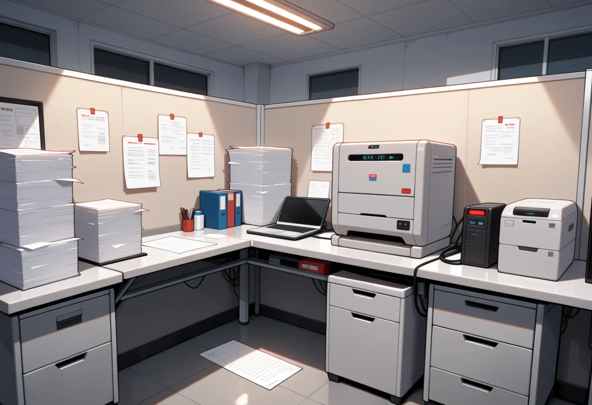
Current game image (for comparison)
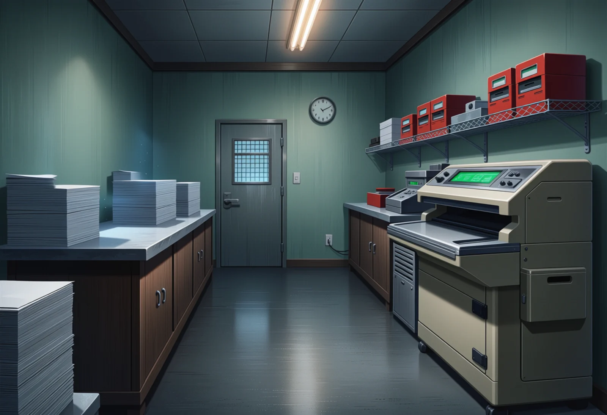
copyroom-door-4102-fix
Intent: He is alone with the copier, and the only door has a small window anyone passing could look through.
Seen from the back corner toward the one door, which has a small wired-glass window. Copier on the right, reams on the left. There was a window on the left wall; I painted it out.
Prompt
masterpiece, best quality, score_9, score_8, score_7, year 2025, newest, highres, absurdres, very aesthetic, anime screenshot, anime coloring, 2d, cel shading, clean lineart, safe, no humans, scenery, background art for a visual novel, a small windowless office copy room, camera at eye level in the back corner of the room looking toward the only door, (one closed grey door in the far wall with a small narrow wired-glass window in it showing the lit corridor outside:1.4), a big old bulky beige multifunction copier standing against the right wall with its paper trays and a finisher unit, a small green control panel, a waist-high counter along the left wall with stacks of copy paper reams, a heavy desk stapler and a hole punch, metal shelves with toner boxes and paper boxes, a wall clock, fluorescent tube ceiling lights, grey vinyl floor, bare walls, secluded and quiet, cold flat fluorescent light, dominant pale grey-green walls, broad off-white paper and beige copier plastic, sparse green copier-panel glow and red toner-box accents
Negative
worst quality, low quality, early, old, score_1, score_2, score_3, artist name, blurry, jpeg artifacts, bad anatomy, bad hands, missing fingers, extra fingers, long fingernails, claws, extra limbs, merged limbs, text, watermark, signature, 3d, realistic, photorealistic, render, chubby, nude, nsfw, child, loli, people, person, 1girl, 1boy, crowd, character, people, silhouette, passenger, readable text, letters, logo, brand name, signage text, duplicate objects, floating objects, impossible architecture, distorted perspective, warped lines, large window, window view, sunlight, sky, open plan office, desk with computer, bed, sofa, green glowing floor
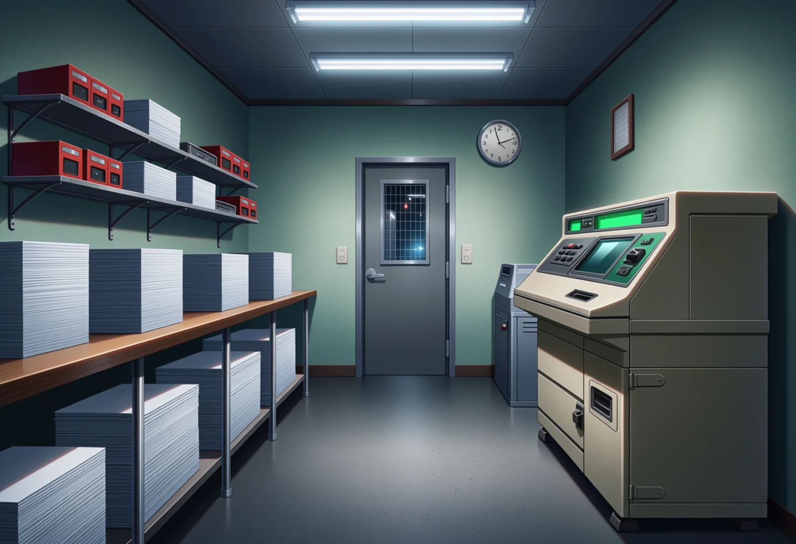
copyroom-door-4103
Intent: He is alone with the copier, and the only door has a small window anyone passing could look through.
Same view, tidier and colder. Two tube lights, shelves of toner, and the copier looks a little like a kiosk.
Prompt
masterpiece, best quality, score_9, score_8, score_7, year 2025, newest, highres, absurdres, very aesthetic, anime screenshot, anime coloring, 2d, cel shading, clean lineart, safe, no humans, scenery, background art for a visual novel, a small windowless office copy room, camera at eye level in the back corner of the room looking toward the only door, (one closed grey door in the far wall with a small narrow wired-glass window in it showing the lit corridor outside:1.4), a big old bulky beige multifunction copier standing against the right wall with its paper trays and a finisher unit, a small green control panel, a waist-high counter along the left wall with stacks of copy paper reams, a heavy desk stapler and a hole punch, metal shelves with toner boxes and paper boxes, a wall clock, fluorescent tube ceiling lights, grey vinyl floor, bare walls, secluded and quiet, cold flat fluorescent light, dominant pale grey-green walls, broad off-white paper and beige copier plastic, sparse green copier-panel glow and red toner-box accents
Negative
worst quality, low quality, early, old, score_1, score_2, score_3, artist name, blurry, jpeg artifacts, bad anatomy, bad hands, missing fingers, extra fingers, long fingernails, claws, extra limbs, merged limbs, text, watermark, signature, 3d, realistic, photorealistic, render, chubby, nude, nsfw, child, loli, people, person, 1girl, 1boy, crowd, character, people, silhouette, passenger, readable text, letters, logo, brand name, signage text, duplicate objects, floating objects, impossible architecture, distorted perspective, warped lines, large window, window view, sunlight, sky, open plan office, desk with computer, bed, sofa, green glowing floor
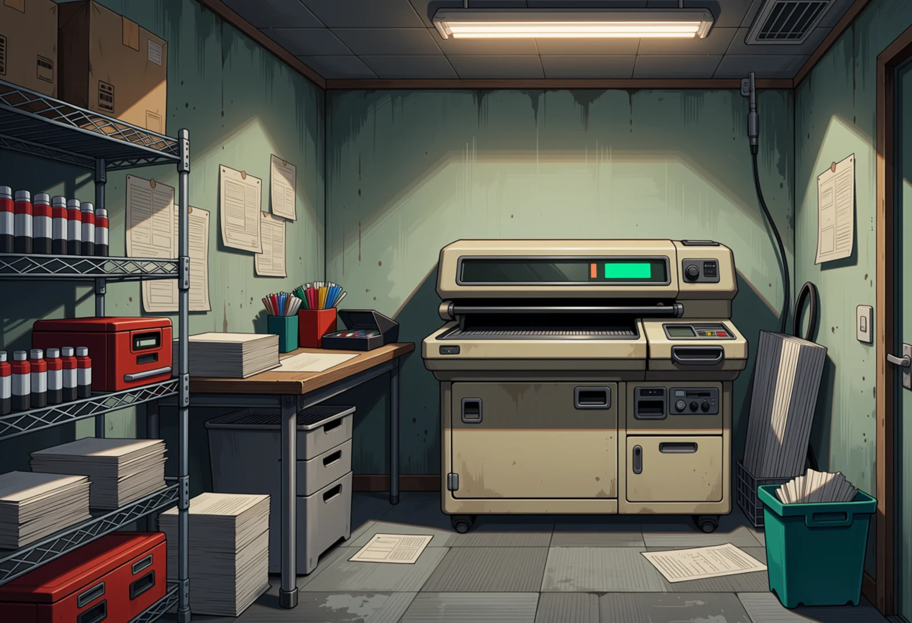
copyroom-copier-4201
Intent: The copier he has to get 30 sets out of, in a small room nobody visits.
From the doorway: an old beige copier against the back wall, toner shelves, a worktable with reams. The door edge shows on the right.
Prompt
masterpiece, best quality, score_9, score_8, score_7, year 2025, newest, highres, absurdres, very aesthetic, anime screenshot, anime coloring, 2d, cel shading, clean lineart, safe, no humans, scenery, background art for a visual novel, a cramped windowless copy room in a Japanese office building, camera at eye level just inside the door looking into the room, (a large old bulky beige multifunction office copier as the centrepiece against the back wall:1.4), its lid closed, output trays with a small stack of copies, a sorter-stapler finisher on its side, a narrow worktable beside it with paper reams, a stapler and a box of staples, metal shelving with toner cartridges in boxes on the left wall, a recycling bin full of paper, no windows at all, one fluorescent ceiling panel, scuffed grey walls, cold flat fluorescent light, dominant pale grey-green walls, broad off-white paper and beige copier plastic, sparse green copier-panel glow and red toner-box accents
Negative
worst quality, low quality, early, old, score_1, score_2, score_3, artist name, blurry, jpeg artifacts, bad anatomy, bad hands, missing fingers, extra fingers, long fingernails, claws, extra limbs, merged limbs, text, watermark, signature, 3d, realistic, photorealistic, render, chubby, nude, nsfw, child, loli, people, person, 1girl, 1boy, crowd, character, people, silhouette, passenger, readable text, letters, logo, brand name, signage text, duplicate objects, floating objects, impossible architecture, distorted perspective, warped lines, large window, window view, sunlight, sky, open plan office, desk with computer, bed, sofa, green glowing floor

copyroom-copier-4203
Intent: The copier he has to get 30 sets out of, in a small room nobody visits.
Framed by the door frame, so you're looking into a small, forgotten room. Copier in the middle, table and bins on the right.
Prompt
masterpiece, best quality, score_9, score_8, score_7, year 2025, newest, highres, absurdres, very aesthetic, anime screenshot, anime coloring, 2d, cel shading, clean lineart, safe, no humans, scenery, background art for a visual novel, a cramped windowless copy room in a Japanese office building, camera at eye level just inside the door looking into the room, (a large old bulky beige multifunction office copier as the centrepiece against the back wall:1.4), its lid closed, output trays with a small stack of copies, a sorter-stapler finisher on its side, a narrow worktable beside it with paper reams, a stapler and a box of staples, metal shelving with toner cartridges in boxes on the left wall, a recycling bin full of paper, no windows at all, one fluorescent ceiling panel, scuffed grey walls, cold flat fluorescent light, dominant pale grey-green walls, broad off-white paper and beige copier plastic, sparse green copier-panel glow and red toner-box accents
Negative
worst quality, low quality, early, old, score_1, score_2, score_3, artist name, blurry, jpeg artifacts, bad anatomy, bad hands, missing fingers, extra fingers, long fingernails, claws, extra limbs, merged limbs, text, watermark, signature, 3d, realistic, photorealistic, render, chubby, nude, nsfw, child, loli, people, person, 1girl, 1boy, crowd, character, people, silhouette, passenger, readable text, letters, logo, brand name, signage text, duplicate objects, floating objects, impossible architecture, distorted perspective, warped lines, large window, window view, sunlight, sky, open plan office, desk with computer, bed, sofa, green glowing floor
Sales (third floor)
The current one has no monitors and a glass ceiling. These are busy desk rows with screens, phones and a target board, to contrast with the basement.
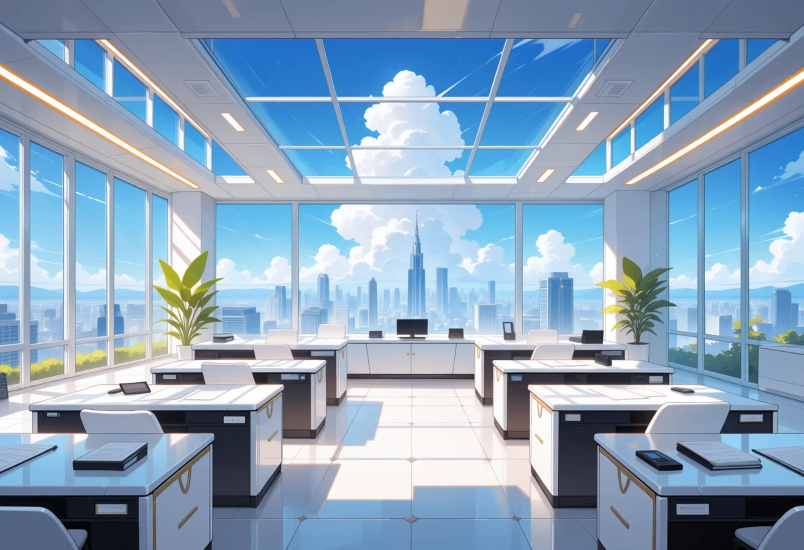
Current game image (for comparison)
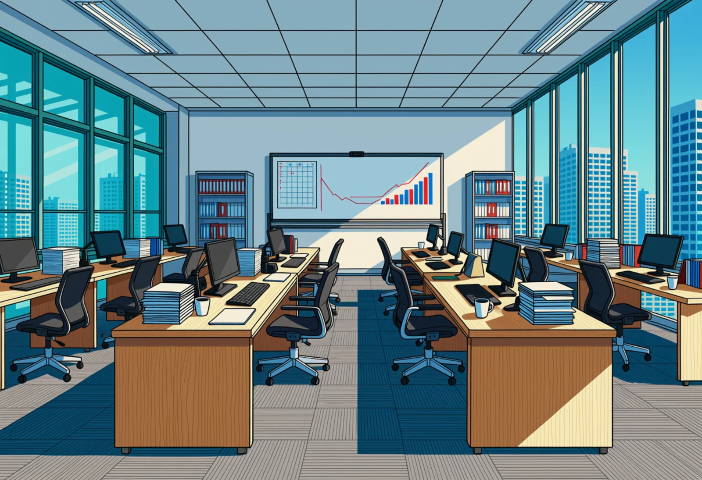
sales-island-3303
Intent: Rei's floor: rows of busy-looking desks that make the basement look shabby. People are added as sprites.
Desk blocks face each other across the aisle, with the target chart on the far whiteboard and windows on both sides. Tidy and bright.
Prompt
masterpiece, best quality, score_9, score_8, score_7, year 2025, newest, highres, absurdres, very aesthetic, anime screenshot, anime coloring, 2d, cel shading, clean lineart, safe, no humans, scenery, background art for a visual novel, (anime background art, flat cel shading, bold clean lineart, hand-painted anime style:1.4), a busy open-plan sales department in a Japanese company office, camera at standing eye level at the end of the main aisle, (Japanese island desk layout: long blocks of desks pushed together face to face, people sit on both long sides facing each other across the block:1.3), every desk with two monitors, a desk phone with a headset, stacked folders, papers and coffee cups, black mesh chairs pushed back at odd angles, a manager desk across the far end of each block, a big wall screen at the far wall with bar charts and a red target line, a whiteboard with a bar chart, a glass-walled meeting room on the left, tall windows on the right with other office towers outside, grey carpet tiles, flat LED ceiling panels, crisp daylight and cool LED panel light, dominant white and graphite, broad pale wood, sparse teal and red accents
Negative
worst quality, low quality, early, old, score_1, score_2, score_3, artist name, blurry, jpeg artifacts, bad anatomy, bad hands, missing fingers, extra fingers, long fingernails, claws, extra limbs, merged limbs, text, watermark, signature, 3d, realistic, photorealistic, render, chubby, nude, nsfw, child, loli, people, person, 1girl, 1boy, crowd, character, people, silhouette, passenger, readable text, letters, logo, brand name, signage text, duplicate objects, floating objects, impossible architecture, distorted perspective, warped lines, photo, realistic lighting, 3d render, cgi, skylight, glass roof, bed, sofa, living room, classroom, home office, cluttered junk, dirty
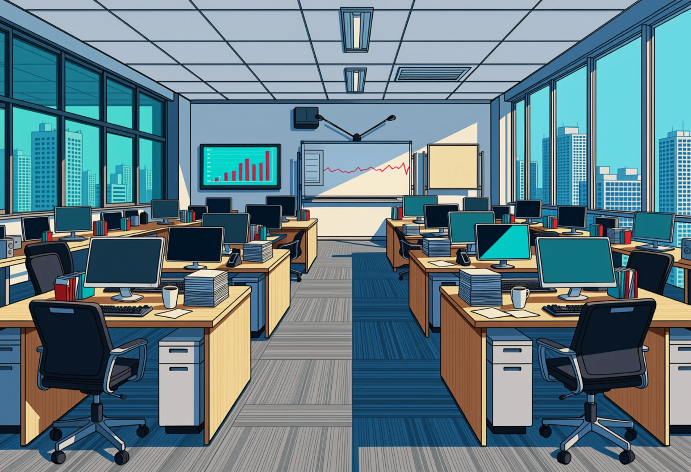
sales-island-3304
Intent: Rei's floor: rows of busy-looking desks that make the basement look shabby. People are added as sprites.
Denser and messier: more monitors, piled folders, a screen with bar charts. Looks the busiest.
Prompt
masterpiece, best quality, score_9, score_8, score_7, year 2025, newest, highres, absurdres, very aesthetic, anime screenshot, anime coloring, 2d, cel shading, clean lineart, safe, no humans, scenery, background art for a visual novel, (anime background art, flat cel shading, bold clean lineart, hand-painted anime style:1.4), (empty room, no people:1.5), a hard-working open-plan sales department in a Japanese company office during lunch break, everyone out, camera at standing eye level at the end of the main aisle, (Japanese island desk layout: long blocks of desks pushed together face to face, people sit on both long sides facing each other across the block:1.3), every desk with two monitors, a desk phone with a headset, stacked folders, papers and coffee cups, black mesh chairs pushed back at odd angles, a manager desk across the far end of each block, a big wall screen at the far wall with bar charts and a red target line, a whiteboard with a bar chart, a glass-walled meeting room on the left, tall windows on the right with other office towers outside, grey carpet tiles, flat LED ceiling panels, crisp daylight and cool LED panel light, dominant white and graphite, broad pale wood, sparse teal and red accents
Negative
worst quality, low quality, early, old, score_1, score_2, score_3, artist name, blurry, jpeg artifacts, bad anatomy, bad hands, missing fingers, extra fingers, long fingernails, claws, extra limbs, merged limbs, text, watermark, signature, 3d, realistic, photorealistic, render, chubby, nude, nsfw, child, loli, people, person, 1girl, 1boy, crowd, character, people, silhouette, passenger, readable text, letters, logo, brand name, signage text, duplicate objects, floating objects, impossible architecture, distorted perspective, warped lines, photo, realistic lighting, 3d render, cgi, skylight, glass roof, bed, sofa, living room, classroom, home office, cluttered junk, dirty
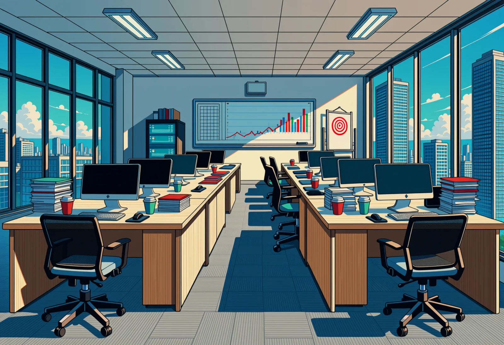
sales-island-3308
Intent: Rei's floor: rows of busy-looking desks that make the basement look shabby. People are added as sprites.
Wide aisle, stacks of files and cups, a rising chart and a bullseye target board at the end. Strong daylight.
Prompt
masterpiece, best quality, score_9, score_8, score_7, year 2025, newest, highres, absurdres, very aesthetic, anime screenshot, anime coloring, 2d, cel shading, clean lineart, safe, no humans, scenery, background art for a visual novel, (anime background art, flat cel shading, bold clean lineart, hand-painted anime style:1.4), (empty room, no people:1.5), a hard-working open-plan sales department in a Japanese company office during lunch break, everyone out, camera at standing eye level at the end of the main aisle, (Japanese island desk layout: long blocks of desks pushed together face to face, people sit on both long sides facing each other across the block:1.3), every desk with two monitors, a desk phone with a headset, stacked folders, papers and coffee cups, black mesh chairs pushed back at odd angles, a manager desk across the far end of each block, a big wall screen at the far wall with bar charts and a red target line, a whiteboard with a bar chart, a glass-walled meeting room on the left, tall windows on the right with other office towers outside, grey carpet tiles, flat LED ceiling panels, crisp daylight and cool LED panel light, dominant white and graphite, broad pale wood, sparse teal and red accents
Negative
worst quality, low quality, early, old, score_1, score_2, score_3, artist name, blurry, jpeg artifacts, bad anatomy, bad hands, missing fingers, extra fingers, long fingernails, claws, extra limbs, merged limbs, text, watermark, signature, 3d, realistic, photorealistic, render, chubby, nude, nsfw, child, loli, people, person, 1girl, 1boy, crowd, character, people, silhouette, passenger, readable text, letters, logo, brand name, signage text, duplicate objects, floating objects, impossible architecture, distorted perspective, warped lines, photo, realistic lighting, 3d render, cgi, skylight, glass roof, bed, sofa, living room, classroom, home office, cluttered junk, dirty